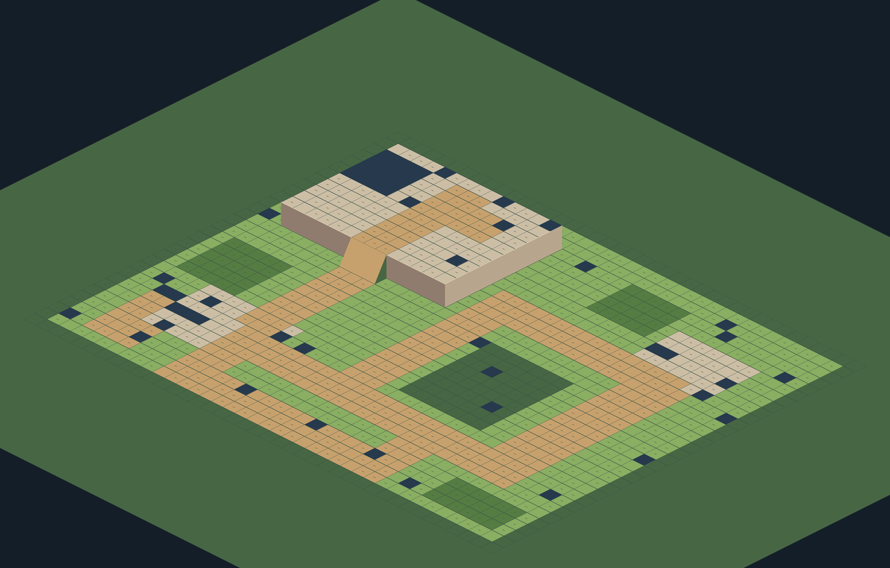
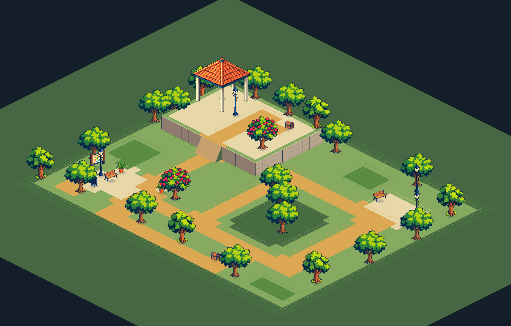
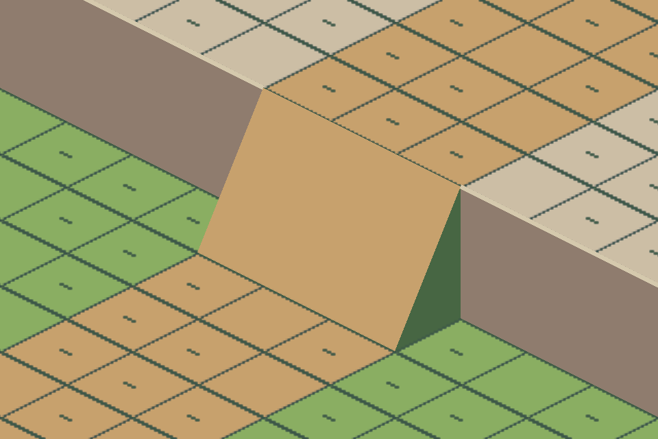
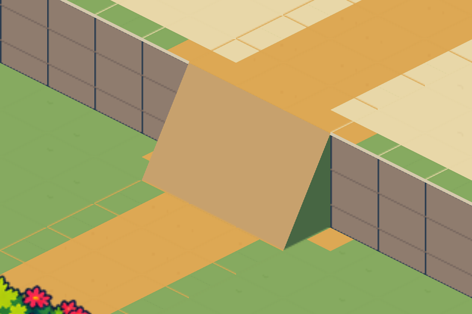

Planta conferida; kit visual em revisão. Coreto montado, superfícies planas editáveis, dois níveis e laços opcionais. Rampa e transições ainda precisam de polimento; missão e recompensas novas não estão ligadas à campanha. Clique para ampliar as capturas reais.
Ver proposta de pintura · Origem da geração e limite de alinhamento. A pintura não é um fundo usado pelo jogo.
Relatório e pendências · Legenda completa · Caminhar no Mapa Studio local



